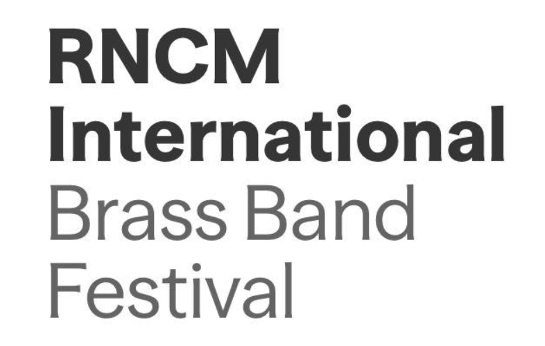

Tomorrow I dare to leave Lancaster and head to the big smoke, Manchester, for The Royal Northern College of Music International Brass Band Festival Spearheaded by David Thornton. This year the event celebrates Philip Sparke in this his 75th year. I will attend the performance of Tredegar Town Band who will also accompany euphonium star Glenn Van Looy. I also intend to see the first half of Black Dyke Band's performance though due to a lack of Northern Rail trains late at night, the first half will be as much as I can see. Still seeing three world premiers is a lot all the same!
